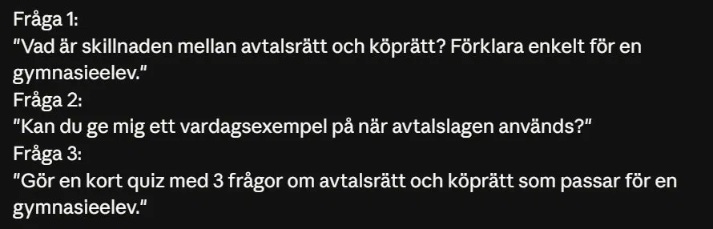

02 — Use Case
Studiehjälp i
.webp)
.webp)
.webp)
.webp)
.webp)
.webp)
Studiehjälp i
Privatjuridik
Målet med testet var att använda Claude som studieverktyg inför ett prov i privatjuridik. Istället för att bara läsa en lärobok testades om Claude kan förklara juridiska begrepp på ett begripligt sätt — och om det kan göra studier mer interaktiva genom quiz-frågor.
01
Utgångspunkt
Jag visste att vi jobbat med avtalsrätt och köprätt i kursen, men hade svårt att hålla isär begreppen. Jag beslutade att testa om Claude kunde klargöra skillnaden.
02
Fråga 1 — Grundbegrepp
» Vad är skillnaden mellan avtalsrätt och köprätt? Förklara enkelt för en gymnasieelev.
Claude svarade med en tydlig metafor: avtalsrätten är "det stora paraplyet" som styr alla avtal, medan köprätten är ett specialområde under det som handlar specifikt om köp av varor. Det tog också upp Avtalslagen (1915) och Köplagen (1990) i ett begripligt sammanhang.
03
Fråga 2 — Vardagsexempel
» Kan du ge mig ett vardagsexempel på när avtalslagen används?
Claude använde ett Zalando-köp som exempel: när du klickar "Bekräfta köp" ingår du ett avtal. Om butiken sedan försöker ta mer betalt bryter de mot avtalet — och avtalslagen skyddar dig. Väldigt konkret och lätt att förstå.
04
Fråga 3 — Interaktiv Quiz
» Gör en kort quiz med 3 frågor om avtalsrätt och köprätt som passar för en gymnasieelev.
Claude skapade en interaktiv quiz med tre realistiska scenarion: en cykel köpt på nätet, skillnaden mellan avtalsrätt och köprätt, samt en telefon som gick sönder. Varje svar kom med en pedagogisk förklaring. Resultat: 3/3.
Skärmdumpar från testet

De tre frågorna som ställdes
Svar — Avtalsrätt vs Köprätt
Vardagsexempel — Zalando
Quiz — Fråga 1 av 3
Quiz — Fråga 2 av 3
Quiz — Fråga 3 av 3
Slutresultat — 3/3